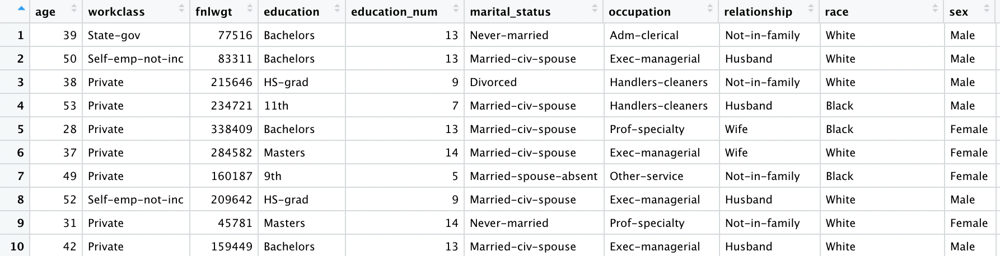
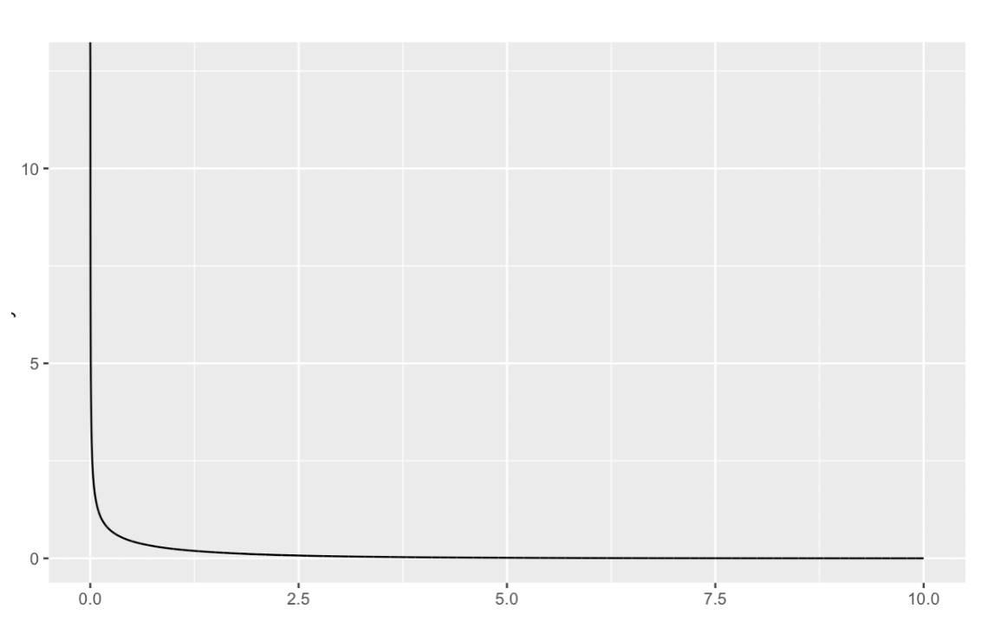
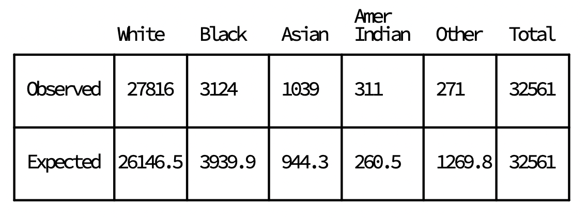

In the last lesson, we learned about the two sample independent t-test, which allowed us to compare the means of two groups
In this lesson, we'll learn about how we can perform a hypothesis test on a different data type:
categorical data
As its name suggests, categorical data is just a collection of categories
Categorical data often comes from surveys,
where questions may ask participants
about their race or income level
We'll be working with data on US income and demographics throughout this lesson

- Each row represents a single person who was counted in the 1990 US Census
This sample data seems to be somewhat biased, since we would expect the ratio to be more evenly split between the two genders
However, we currently don't have anything in our toolkit that will allow us to test if this data is significantly different from what we expect
As we move through the lesson,
we'll slowly develop the intuition behind the hypothesis test for categorical data
At the end, we'll learn how to take other datasets and apply the same hypothesis test for future questions
we may have about it
Observed Data vs Expected Data
- We turned our intuition about the data
- the gender split should be even
- Given 32,561 rows, expect 16280.5 men and women in the data set
- We can actually calculate how much the data deviates from what we expect from it
21790 - 16280.5 # males
>> 5509.5
10771 - 16280.5 # females
>> -5509.5
- We would interpret this difference
- there being 5509.5 more males than what we expect
- 5509.5 less females than what we would expect
- This number is useful, but we would prefer to have a more standardized way of expressing differences
- Instead of just the raw differences, we can divide them by the expected values
- Doing so will allow us to say what percentage the data deviates from our expectation
- $\% \text{deviation} = \frac{\text{Observed}- \text{Expected}}{\text{Expected}}$
female_diff <- (10771 - 16280.5) / 16280.5
male_diff <- (21790 - 16280.5) / 16280.5
In hypothesis testing, we're always looking for a good test statistic for us to summarize the data and use to calculate the probability of observing the data we see
Dealing With Cancellation
- We got -0.338 for the female, and 0.338 for the male % difference
- Sum of the raw deviations in all the categories won't do us any good
- One way is to square the difference
- $\frac{O-E}{E}\rightarrow\frac{(O-E)^2}{E}$
- $\frac{O-E}{E}\rightarrow\frac{(O-E)^2}{E}$
- Squaring the difference has other useful mathematical properties
- prevent deviations from cancelling each other out
- make large deviations from expected values more apparent
- Squaring small values will still create small values, but squaring large numbers will make them grow exponentially larger
female_diff_sq <- (10771 - 16280.5)^2 / 16280.5
male_diff_sq <- (21790 - 16280.5)^2 / 16280.5
squared_diff_sum <- female_diff_sq + male_diff_sq
- Revisit $\% \text{deviation} = \frac{\text{Observed}- \text{Expected}}{\text{Expected}}$
- This formula has a similar form to the t-statistic that we computed
- $t = \frac{x-\mu}{\sigma}\iff \frac{O-E}{E}$
- Standardizing by the expected value is similar to standardizing by the standard deviation
- both of these values follow a standard normal distribution
If we were to look at many, many sample datasets on the census, we would expect to see mostly small deviations from our expectations on the gender counts and get rare large deviations from what we expect
If we plotted a probability distribution of these deviations, we would observe a normal distribution
- Now consider $\frac{O-E}{E}\rightarrow\frac{(O-E)^2}{E}$
- Squaring a value that comes from a standard normal distribution changes what distribution it comes from
- Thankfully, this new probability distribution is also well studied
- There's no need to understand the technical details behind this
- but it's good to know that squaring a standard normal distribution produces a chi-squared distribution
- Recall that in the last lecture
- We took advantage of the fact that the difference in means followed a normal distribution
- Our null hypothesis assumed that the difference in the means was 0
- Afterwards, we looked at how extreme our test statistic was under the null hypothesis, where we assumed the difference in means would be 0
- Finally, we calculated the probability of seeing our test statistic or more extreme statistics under the null hypohthesis and called it our p-value
We have followed almost the same process here with the categorical data
We have created a test statistic, the sum of squared deviations, summarizing the amount of deviation in our data
This test statistic, as we just found out, follows a chi-squared distribution
Our job now is to figure out what our null hypothesis is and then see how extreme our test statistic is under this assumption
Developing a null hypothesis
- We assumed that the data have an even split between males and females
- $H_0$: the data sample is not different from the Census data based on the gender ratio
- $H_1$: the data sample is different from the Census data based on the gender ratio
- We already have our test statistic, the sum of squared deviations
- this test statistic follows a chi-squared distribution
- which chi-squared distribution to use?
- For normal distribution, mean and variance are the parameters
- most probability distributions have parameters that slightly change how the distribution will look
- For a chi-squared distribution, the parameter that changes its shape is called its degrees of freedom
- describes how many independent variables are used to calculate the test statistic
- For a chi-squared distribution, the degrees of freedom is the number of categories we used to sum up to make the test statistic, minus one
- we used two pieces of information
- the squared difference of the males
- the squared difference of the females
- Since we used two genders here, the degrees of freedom for the chi-distribution under the null hypothesis would be 1
Degrees of freedom is that it influences the chi-squared distribution we use,
and it's relatively easy to calculate

- DF is 1, and most of the probability is between 0 and 1 in this chi-squared distribution
- Anything bigger than 1 has an extremely low probability
- already expect that test statistics with high values would most likely have low probabilities
- Just so you know how extreme this statistic is, calculate the p-value of this statistic
- We can use the pchisq() function to calculate the cumulative probability
> pchisq(1, df = 1)
[1] 0.6826895
> pchisq(2, df = 1)
[1] 0.8427008
Calculate the p-value for the test statistic of 3728, and assign it to pvalue
> 1 - pchisq(3728, 1)
[1] 0
Should we reject the null hypothesis based on this p-value?
The p-value we calculated in the last screen was so small, so we rejected the null hypothesis
Henece, we would have a poor subset of the Census
Now consider we only received a dataset with 20 rows, but it had the same observed and expected proportions
- $\frac{(13-10)^2}{10} + \frac{(7-10^2)}{10} = 0.9+0.9 = 1.8$
> 1 - pchisq(1.8, 1)
[1] 0.1797125
The chi-squared distribution is what we call sensitive to small sample sizes
- if the sample size of our data set was a lot smaller, it might drastically change what the resulting test statistic could be
Considering More Categories
- Let's consider the race column of the data
- From the full 1990 US Census:
- White: 80.3 %
- Black: 12.1 %
- Asian-Pac-Islander: 2.9%
- Amer-Indian-Eskimo: .8%
- Other: 3.9%
- Now, we actually observe in the data

- Our hypotheses become:
- $H_0$: The proportions of different races in the data are the same as those in the full Census
- $H_1$: The proportions of different races in the data are not the same as those in the full Census
- For each category (White, Black, Asian-Pac-Islander, Amer-Indian-Eskimo, and Other):
- compute the difference between the expected and observed counts,
- square the difference,
- divide by the expected value,
- keep a running sum of the squared differences
What's the degrees of freedom?